| Тема 1 Функции Python. | |||||
| Назад | |||||
|
Функции представляют блок кода, который выполняет определенную задачу и который можно повторно использовать в других частях программы. В предыдущих статьях уже использовались функции. В частности, функция print(), которая выводит некоторое значение на консоль. Python имеет множество встроенных функций и позволяет определять свои функции. Формальное определение функции:
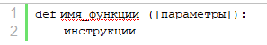 Определение функции начинается с выражения def, которое состоит из имени функции, набора скобок с параметрами и двоеточия. Параметры в скобках необязательны. А со следующей строки идет блок инструкций, которые выполняет функция. Все инструкции функции имеют отступы от начала строки. Например, определение простейшей функции:
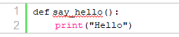
Функция называется Обратите внимание, что инструкции функции должны иметь отступы от начала функции. Например:
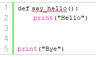
Здесь инструкция Для вызова функции указывается имя функции, после которого в скобках идет передача значений для всех ее параметров:
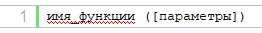 Например, определим и вызовем функцию:
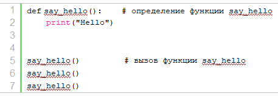 Здесь три раза подряд вызывается функция say_hello. В итоге мы получим следующий консольный вывод: Hello Hello Hello Обратите внимание, что функция сначала определяется, а потом вызывается. Если функция имеет одну инструкцию, то ее можно разместить на одной строке с остальным определением функции:
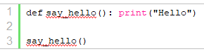 Подобным образом можно определять и вызывать и другие функции. Например, определим и выполним несколько функций:
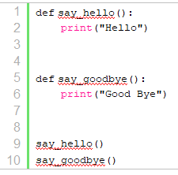 Консольный вывод: Hello Good Bye Локальные функцииОдни функции могут определяться внутри других функций - внутренние функции еще называют локальными. Локальные функции можно использовать только внутри той функции, в которой они определены. Например:
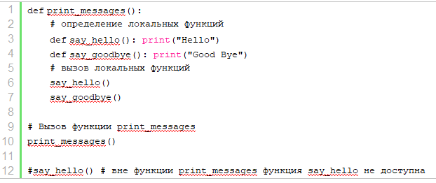
Здесь функции Организация программы и функция main
В программе может быть определено множество функций. И чтобы
всех их упорядочить, одним из способов их организации является
добавление специальной функции (обычно называется
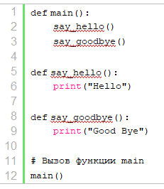 Параметры функции
Функция может принимать параметры. Через параметры в функцию
можно передавать данные. Банальный пример - функция Теперь определим и используем свою функцию с параметрами:
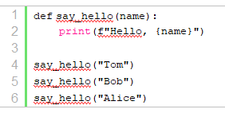 Функция say_hello имеет параметр name, и при вызове функции мы можем передать этому параметру какой-либо значение. Внутри функции мы можем использовать параметр как обычную переменную, например, вывести значение этого параметра на консоль функцией print. Так, в выражении:
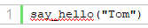 Строка "Tom" будет передаваться параметру name. В итоге при выполнении программы мы получим следующий консольный вывод: Hello, Tom Hello, Bob Hello, Alice При вызове функции значения передаются параметрам по позиции. Например, определим и вызовем функцию с несколькими параметрами:
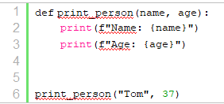
Здесь функция
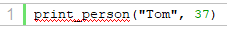
Первое значение - "Tom" передается первому параметру, то есть
параметру Name: Tom Age: 37 Через параметры в функцию можно передавать данныеНекоторые параметры функции мы можем сделать необязательными, указав для них значения по умолчанию при определении функции. Например:
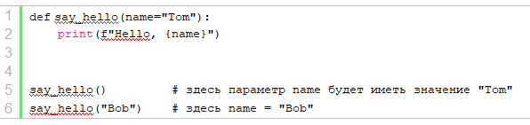 Здесь параметр name является необязательным. И если мы не передаем при вызове функции для него значение, то применяется значение по умолчанию, то есть строка "Tom". Консольный вывод данной программы: Hello, Tom Hello, Bob Если функция имеет несколько параметров, то необязательные параметры должны идти после обязательных. Например:
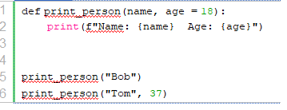 Здесь параметр age является необязательным и по умолчанию имеет значение 18. Перед ним расположен обязательный параметр name. Поэтому при вызове функции мы можем не передавать значение параметру age, но параметру name передать значение необходимо. При необходимости мы можем сделать все параметры необязательными:
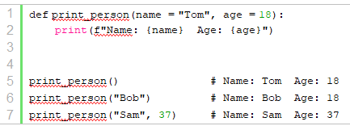 Передача значений параметрам по имени. Именованные параметрыВ примерах выше при вызове функции значения передаются параметрами функции по позиции. Но также можно передавать значения параметрам по имени. Для этого при вызове функции указывается имя параметра и ему присваивается значение:
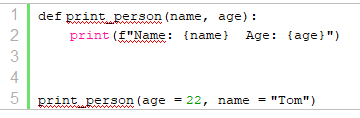
В данном случае значения параметрам age и name передаются по
имени. И несмотря на то, что параметр name идет первым в
определении функции, мы можем при вызове функции написать Символ * позволяет установить, какие параметры будут именнованными - то есть такие параметры, которым можно передать значения только по имени. Все параметры, которые располагаются справа от символа *, получают значения только по имени:
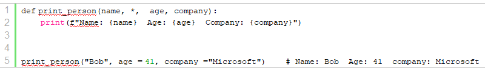 В данном случае параметры age и company являются именнованными. Можно сделать все параметры именнованными, поставив перед списком параметров символ *:
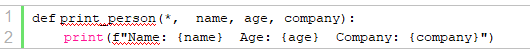 Если наоборот надо определить параметры, которым можно передавать значения только по позиции, то есть позиционные параметры, то можно использовать символ /: все параметры, которые идут до символа / , являются позиционными и могут получать значения только по позиции
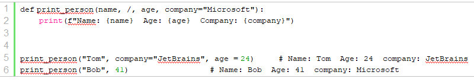 В данном случае параметр name является позиционным. Для одной функции можно определять одновременно позиционные и именнованные параметры.
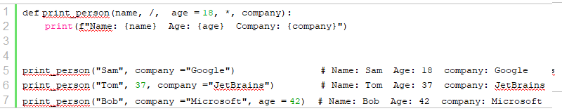
В данном случае параметр
Параметр Неопределенное количество параметровС помощью символа звездочки можно определить параметр, через который можно передавать неопределенное количество значений. Это может быть полезно, когда мы хотим, чтобы функция получала несколько значений, но мы точно не знаем, сколько именно. Например, определим функцию подсчета суммы чисел:
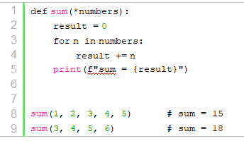
В данном случае функция sum принимает один параметр - Оператор return и возвращение результата из функцииВозвращение результатаФункция может возвращать результат. Для этого в функции используется оператор return, после которого указывается возвращаемое значение:
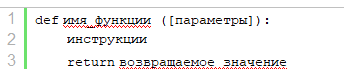 Определим простейшую функцию, которая возвращает значение:
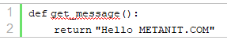
Здесь после оператора return идет
строка Затем это результат функции можно присвоить переменной или использовать как обычное значение:
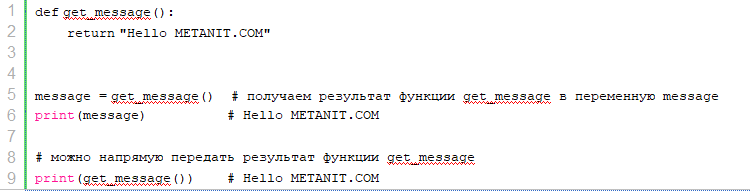 После оператора return может идти и сложное вычислимое выражение, результат которого будет возвращаться из функции. Например, определим функцию, которая увеличивает число в два раза:
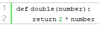
Здесь функция double будет возвращать результат выражения
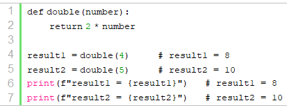 Или другой пример - получение суммы чисел:
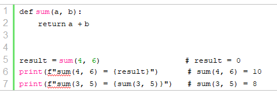 Выход из функцииОператор return не только возвращает значение, но и производит выход из функции. Поэтому он должен определяться после остальных инструкций. Например:
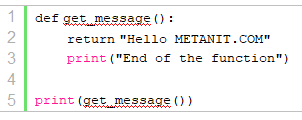
С точки зрения синтаксиса данная функция корректна, однако ее
инструкция Однако мы можем использовать оператор return и в таких функциях, которые не возвращают никакого значения. В этом случае после оператора return не ставится никакого возвращаемого значения. Типичная ситуация - в зависимости от опеределенных условий произвести выход из функции:
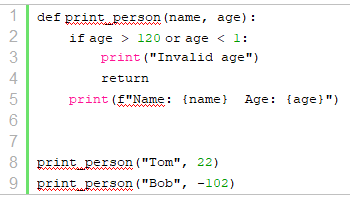
Здесь функция Однако если возраст корректен, то выводим информацию о пользователе на консоль. Консольный вывод: Name: Tom Age: 22 Invalid age |
|||||
| Конспект подготовлен Бакулиным А. М. 2022 год. | |||||